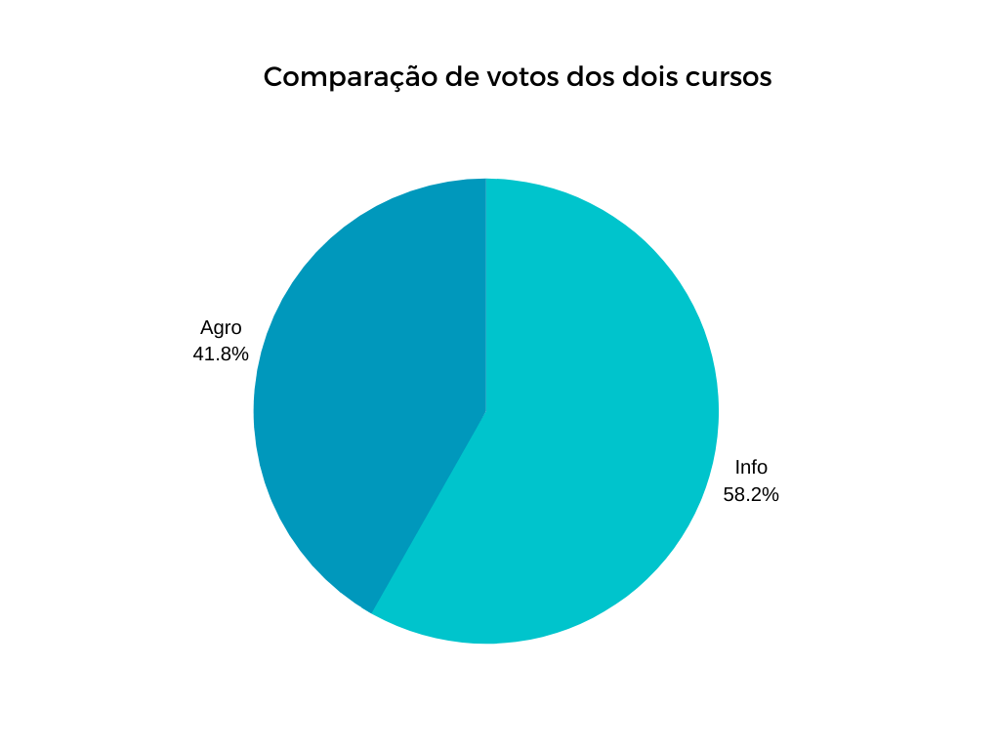
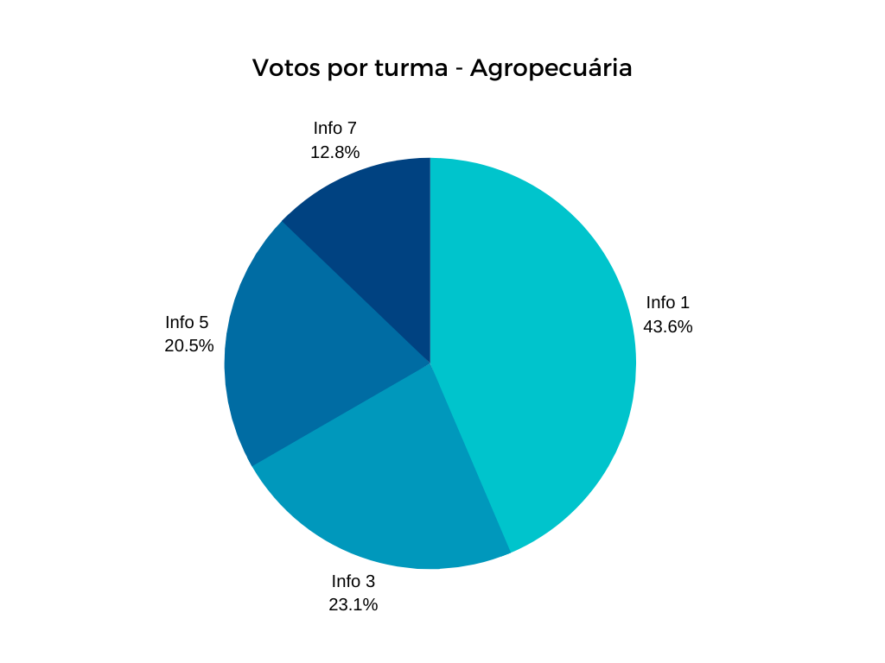
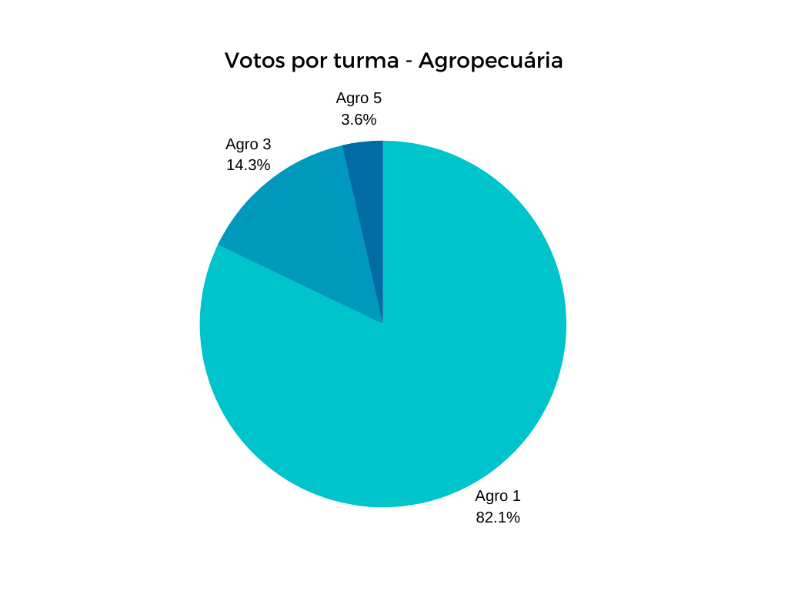

Ensino Remoto: a causa e a solução para os problemas da educação na pandemia
Introdução
Sabe-se que todas as áreas da sociedade foram afetadas direta ou indiretamente pelo tão temido vírus Sars-cov-2, desde a saúde até a bolsa de valores e as viagens espaciais. Porém, entre essas áreas encontra-se uma das mais importantes para o desenvolvimento global e com certeza uma das que mais sofreram dentre as vítimas dessa pandemia, a educação.
A educação é a base do desenvolvimento, porque é a partir dela que se reproduzem as culturas, é através dela que são passados os conhecimentos sobre matemática, história, física, gramática e tantas outras matérias, afim de que através delas possam surgir mais educadores e mais pessoas que buscam conhecimento, para que a humanidade possa evoluir cada vez mais. Vê-se então quão importante é essa área para a evolução e a própria sobrevivência do ser humano.
Partindo-se então desse ponto de vista e levando em consideração a atual situação da humanidade, em que têm-se um isolamento social para cumprir, afim de que possamos amenizar o contágio do tal vírus para outras pessoas, pode-se notar consequências nítidas para a educação, principalmente no Brasil. Dito isso, esse trabalho tem por objetivo mostrar os resultados da pesquisa feita pelo aluno João Pedro sobre a educação na cidade de Nova Andradina-MS, mais especificamente no Instituto Federal de Mato Grosso do Sul – Campus Nova Andradina, e mostrar algumas possíveis soluções para amenizar as consequências da quarentena para a educação, que embora não tenham sido testadas, foram decididas com base no que foi descoberto.
EAD x Ensino Remoto
O método do EAD (Ensino a distância) já é utilizado há muitos anos, na verdade, os primeiros registros datam de 1728, quando já existia a educação através de cartas. Esse recurso funciona da seguinte maneira: o aluno localiza-se em um ponto e o professor em outro, os dois se comunicam através de cartas (hoje é mais comum a comunicação através da internet), e dessa forma o professor explica a matéria e passa as lições e o aluno aprende e retorna ao professor os resultados e suas dúvidas. Muito simples, não?
Entretanto, vale ressaltar que o EAD é uma modalidade de ensino, um método, que se assemelha muito com o ensino remoto, que tem sido utilizado por boa parte das escolas durante a pandemia, porém, mesmo parecidas, são coisas diferentes. O ensino remoto é uma solução rápida e sem um planejamento aprofundado para que as aulas continuem, ou seja, não pode ser considerada uma modalidade de ensino. Já o EAD é pensado e estruturado para garantir o ensino e educação a distância.
Para um melhor entendimento, veja abaixo um quadro comparativo entre as duas coisas:
| Ensino a Distância(EAD) | Ensino Remoto |
| Desenhado para prestar atendimento, aplicar atividades, aulas e outras demandas em um ambiente de aprendizado, com apoio de tutores e recursos tecnológicos que favorecem o ensino. | Aulas e atividades são marcadas pontualmente, como se fosse acompanhar as aulas presenciais, porém, aplicado em plataformas digitais. |
| Possui um modo de funcionamento próprio. Com concepção didático-pedagógica, é estruturada de forma flexível e abrange os conteúdos, atividades e todo um design adequado às características das áreas de conhecimentos gerais e específicos, contemplando todo processo avaliativo discente. | Pensado para ser uma solução rápida, temporária, apenas para suprir algum tipo de obstáculo/dificuldade que impeçam as aulas presenciais, como o caso da atual crise. |
O ensino remoto como solução durante a pandemia
O covid-19 obrigou todos a cumprir uma quarentena para evitar o contágio dele, fazendo com que as pessoas tenham que se isolar socialmente, ter o mínimo contato possível com outras pessoas. Dessa forma, as escolas suspenderam as atividades presenciais para que o isolamento possa ser cumprido corretamente. Mas, como já foi dito, a educação é a base do desenvolvimento, e se for parada, o desenvolvimento, pelo menos a longo prazo, será prejudicado.
Então, a solução encontrada para o problema em tão pouco tempo foi justamente o ensino remoto, utilizando a internet a favor da educação. No Instituto Federal de Mato Grosso do Sul – Campus Nova Andradina (IFMS-NA), o lugar alvo da pesquisa, estão sendo utilizados até o presente momento, 31 de maio de 2020, o aplicativo Moodle e a área do site do IFMS voltado para o ensino a distância(EAD IFMS) para que os conteúdos sejam explicados e as atividades sejam atribuídas.
Um mal que vem para o bem: os problemas do ensino remoto
Como já dito, o ensino remoto não é uma modalidade de ensino, portanto, não foi pensada e planejada profundamente e não é estruturada como o EAD. Como consequência, problemas surgiram e surgem frequentemente, tanto para os alunos, quanto para os professores.
Problemas gerados para os alunos
Foi enviado um formulário para os líderes de cada sala, para que eles respondessem e repassassem para suas turmas, contendo as seguintes perguntas:
● Você tem feito as atividades do ensino remoto?
● Você tem tido dificuldade para compreender as matérias e absorver o conteúdo?
● Você tem internet instalada em casa ou usa os dados móveis para fazer as atividades
● Você acessa as aulas pelo computador/laptop ou pelo celular/tablet?
O formulário atingiu todas as turmas do Ensino Médio, desde a Info 1 até a Info 7, no curso técnico integrado em informática, e da Agro 1 até a Agro 5 no curso técnico integrado em agropecuária. Porém, embora tenha atingido todas as turmas, apenas 67 alunos responderam o formulário. Abaixo estão as estatísticas das respostas dos alunos por turma:
- 

- 
- 
Todas as respostas serão consideradas num cenário em que os alunos responderam com sinceridade (já que algumas vezes alguns alunos apenas respondem, sem prestar atenção).
Embora todas as respostas sejam levadas em consideração, não serão colocados todos os gráficos e os dados aqui por serem muitos. Na verdade, os dados analisados individualmente são quase irrelevantes, o que importa são as combinações deles. Caso queira ver todos os dados, acesse o link que está no fim do texto para a planilha das respostas.
Entrega das atividades
A primeira pergunta, “Você tem feito as atividades?”, teve a maioria das respostas positivas, pois 36(53,7%) alunos responderam que tem feito mais de 90% das atividades, embora muitos alunos tenham respondido que as atividades não têm sido feitas como deveriam. No formulário não foi solicitada nenhuma justificativa para a não execução de 100% das atividades, somente a resposta para a pergunta em forma de múltipla escolha.
Veja os gráficos abaixo e logo em seguida a análise dos dados:

Observando os gráficos, algumas coisas são percebidas:
Embora 83% dos alunos tenham feito suas atividades devidamente (ou o mais próximo do 100% possível), os outros 17% estão numa linha deveras preocupante, visto que as atividades são uma forma de ‘provar’ que o conteúdo foi fixado e aprendido devidamente.
Vendo os gráficos de atividades entregues por curso e calculando os dados numa proporção justa, isto é, calculando a porcentagem em cima do valor total de respostas de cada curso e não do valor total de respostas geral, entre agropecuária e informática, obtêm-se uma nova visão dos dados:
| Téc. Informática | Téc. Agropecuária | |||
| Respostas | Porcentagem | Respostas | Porcentagem | |
| 90% | 22 | 56,41% | 14 | 50% |
| 50-90% | 12 | 30,77% | 8 | 28,57% |
| 20-50% | 4 | 10,26% | 4 | 14,29% |
| -20% | 1 | 2,56% | 1 | 3,57% |
| Não | 0 | 0% | 1 | 3,57% |
| Total | 39 | 100% | 28 | 100% |
Observando, então, a tabela, nota-se uma diferença significativa nas respostas do curso de agropecuária para o curso de informática. Obviamente, os resultados não são tão precisos quanto seriam se o número de respostas fosse maior, porém, supondo que esses dados se mantenham constantes para o resto dos alunos, pode-se esperar uma grande queda no aprendizado, isto porque, considerando a atual situação do ensino médio no IFMS-NA, onde 185 alunos estão matriculados no curso técnico em agropecuária e 194 alunos no curso técnico em informática (Fonte: DIREN-NA), teríamos aproximadamente 39 pessoas(21%) que não entregam 50% das atividades no curso de agropecuária e aproximadamente 25 pessoas(12%) que estão na mesma situação no curso de informática. Esses números podem parecer baixos, porém, quase um quinto dos alunos estão sendo prejudicados por si mesmos ao deixarem de entregar o que lhes é solicitado.
Além disso, foram feitas algumas análises comparando os dados em relação às atividades entregues com as outras respostas, e como resultado têm-se que 54,54% (6) dos estudantes que entregam menos de 50% das atividades são das turmas de agropecuária, 36,36% (4) são das turmas de informática 1AB e apenas 1 aluno (9,09%) corresponde a uma turma de informática veterana. Isso não quer dizer que por serem da agropecuária ou calouros eles tem mais dificuldade com as tarefas ou com computadores, só estão sendo mostrados os resultados da análise feita.
Mesmo analisando todos os dados e comparando as respostas dos alunos, os dados ainda parecem positivos, certo? Sim! Porém, nem tudo que reluz é ouro. Os dados dos professores em relação ao ensino remoto devem ser analisados, pois com eles é possível obter uma visão geral do que acontece realmente para o caso de existirem “entrelinhas” nas respostas dos alunos.
Os bastidores do ensino remoto: o que os professores dizem sobre?
Primeiramente, para deixar claro, apenas 5 professores responderam às perguntas enviadas (mais de 20 professores foram contatados). Então, a análise será feita em cima dos 5 que responderam. As perguntas feitas foram as seguintes:
● Dos alunos a que o(a) senhor(a) dá aula, quantos estão ativos? (Entregando atividades, tirando dúvidas, etc.)
● Houve uma diferença significativa na compreensão dos alunos? Isto é, eles estão conseguindo entender as atividades e as aulas ou estão tendo mais dificuldade do que o normal?
● Referente as notas, houve uma perda significativa das aulas presenciais para as de ensino remoto? Se sim, de quanto?
● E quanto ao plágio? O(a) senhor(a) identificou muitas atividades que foram copiadas? Se sim, de quanto?
● Há alguma observação que o(a) senhor(a) gostaria de fazer?
De forma geral, foram obtidos os seguintes resultados:
| 1ª Pergunta | 2ª Pergunta | 3ª Pergunta | 4ª Pergunta | 5ª Pergunta |
| Média de 90% | No geral não. Mas não é possível ter uma base precisa pois os alunos não se envolvem muito. | Não, ficou mais fácil pois os alunos podem fazer todas as atividades consultando o material da aula. | Difícil quantificar, mas o plágio existe. Um dos professores disse que 10% das tarefas são cópias idênticas e cerca de 30% são cópias não idênticas. | Um dos professores disse que a carga horária foi elevada significantemente, tendo que se dedicar ao trabalho por mais de 10 horas ao dia. |
Levando esses dados em consideração e colocando em uma situação hipotética onde eles são aplicados a todas as matérias e turmas (Novamente, não pode-se afirmar com precisão já que tanto o número de professores quanto o número de alunos que responderam ao questionário foi muito baixo.), têm-se então algumas revelações nas respostas dos alunos:

Segundo o gráfico acima, o plágio teria contaminado então 40% dos alunos (que responderam à pesquisa). Considerando, então, ainda num cenário hipotético, que isso se aplique para todos os alunos da escola, o número de alunos que usam cópias dos trabalhos/atividades ao invés de fazerem por si mesmos chegaria a 152, de um total de 379 matriculados. Segundo os professores, o principal motivo para isso acontecer é justamente o fato dos estudantes estarem no conforto de suas casas. O corpo docente não pode intervir no que o aluno faz ou deixa de fazer em sua casa. Assim, é possível que durante as atividades avaliativas eles consultem a internet ou o material da aula, entreguem cópias feitas pelos seus colegas de classe, além de entregarem as atividades sem nem mesmo abrir a aula/explicação, simplesmente consultam alguém ou algo que deem a eles as respostas que precisam.
Do lado dos alunos pode-se ver então, se esses dados estiverem corretos, que mesmo que os mesmos não façam sua parte como devem, o professor, por ser seu trabalho, deve continuar se esforçando para atender os alunos interessados e conseguir ajudá-los e sanar suas dúvidas, além de terem que preparar as aulas, explicações, atividades, planejar e montar slides, etc. Isso faz com que sua carga horária seja consideravelmente aumentada. Não sabe-se se isso pode ser aplicado a todos os professores, mas segundo a Prof.ª Luciene Bonfim, sua carga horária de trabalho chega a ocupar 12 horas de seu dia para poder cumprir todas as suas obrigações, carga essa que durava 8 horas antes da pandemia. Isso ocorre “Porque, no ensino presencial, o professor faz a explicação referente à atividade menos vezes por estarem todos os alunos num mesmo ambiente”, explica Luciene.
Conclusão
Dito tudo isso, o que poderia ser feito para amenizar as consequências? Abaixo vão algumas sugestões do autor (nenhuma delas foi testada):
● Passar trabalhos práticos específicos para cada aluno. Por exemplo: os alunos devem produzir um texto, então o professor manda que eles façam, porém, com temas diferentes para cada aluno, solicitando que ele mande fotos do texto ao invés de que o texto seja digitado, e que o mesmo cite as referências/bibliografia da sua criação. Fora isso, os professores podem usar softwares que detectam plágio em textos. Dessa forma, o plágio seria, pelo menos em teoria, amenizado.
● Junto com os trabalhos específicos, os professores podem pedir ainda que os alunos expliquem o trabalho deles por áudio ou vídeo, fazendo com que ele tenha algum trabalho por si só, ainda que copie de outra pessoa.
● Poderia ser desenvolvido uma plataforma na web (se já não existirem) em que o professor aplique as atividades avaliativas em tempo real, com hora para começar e terminar, onde os alunos tem uma certa quantidade de linhas para escrever as respostas que dever ser cumprida, e onde eles não poderão colar nada com o comando CTRL + V, ou seja, ainda que o aluno copie, ele terá pelo menos o trabalho de digitar. Fora isso, poderia ser implementado na plataforma um software para analisar o que os alunos estão escrevendo, comparar as respostas entre si e detectar possível plágio.
● Para diminuir a carga horária do professor, o mesmo poderia planejar seu material/conteúdo e estipular um horário de explicação e um para tirar dúvidas em uma página do site http://ead.ifms (que seria criada, claro), onde poderiam ser colocadas as dúvidas mais frequentes e a abertura a novas perguntas, em que o professor só responderia no horário estipulado, ou mesmo, estimular o uso do fórum no site do IFMS, que é uma solução que já existe mas é pouco incentivada.
A partir disso, acredita-se ser possível diminuir as consequências do isolamento social para a educação. Tentando resolver os problemas de plágio nas atividades e carga horária dos professores.
Referências:
Planilha de respostas:
https://docs.google.com/spreadsheets/d/1KQ0Klj_KPo9fOmtqN6REq-CqWa5Dmtqj4VV6VAHHbik/edit?usp=sharing (todos os nomes e e-mails dos alunos foram censurados para preservar a privacidade dos mesmos)
https://www.catho.com.br/educacao/blog/faculdade-presencial-ou-a-distancia-o-que-e-melhor/
https://www.catho.com.br/educacao/blog/faculdade-presencial-ou-a-distancia-o-que-e-melhor/
https://sambatech.com/blog/cat-ead/ead-no-brasil/
https://www.scielo.br/scielo.php?script=sci_arttext&pid=S0104-40362019005009101
https://www.unicesumar.edu.br/blog/diferenca-entre-ensino-remoto-e-ead/